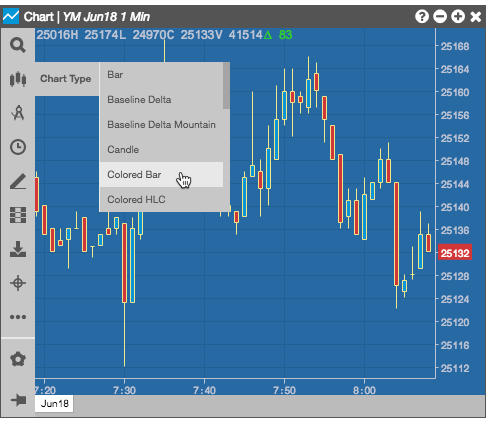
To format and configure your chart, you can:
You can display intervals of historical data using different chart types or styles.
To change the chart type:
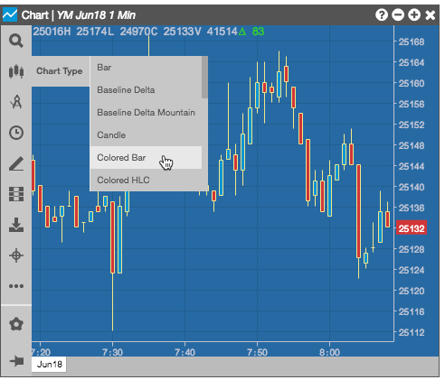
The time interval settings determine how often the chart displays historical market data for the instrument. The default interval is one minute.
To change the time interval:
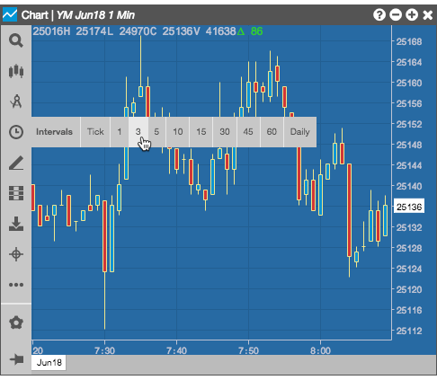
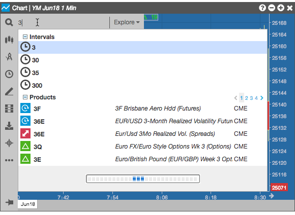
By default, the Chart widget displays a daily value box in the top-left corner that includes the following information:
Right-click the daily value box to show/hide the border around the daily values. By default, the daily value box is displayed with the border hidden.

You can display the daily value box with a vertical or horizontal orientation by right-clicking on the box and selecting the alternate orientation.
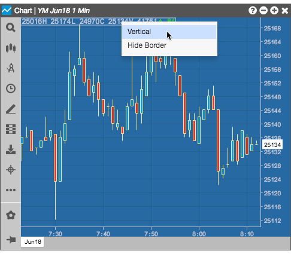
You can click-and-hold and drag-and-drop the daily value box to different locations on the chart.
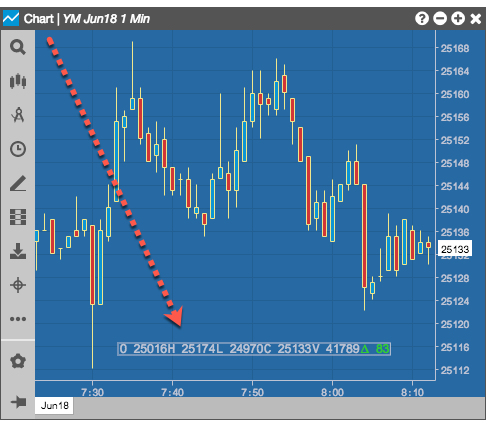
You can also hide (or show) the box by selecting the desired effect from the widget's right-click context menu.
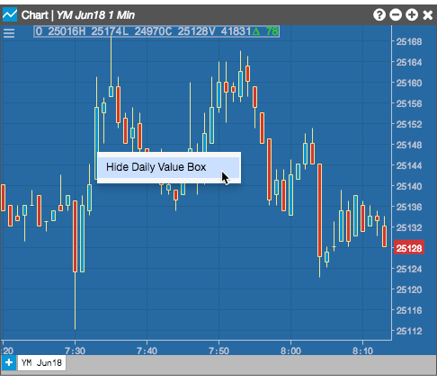
You can click-and-hold in the chart and drag the cursor to the right or left to change the range of time displayed in the chart.
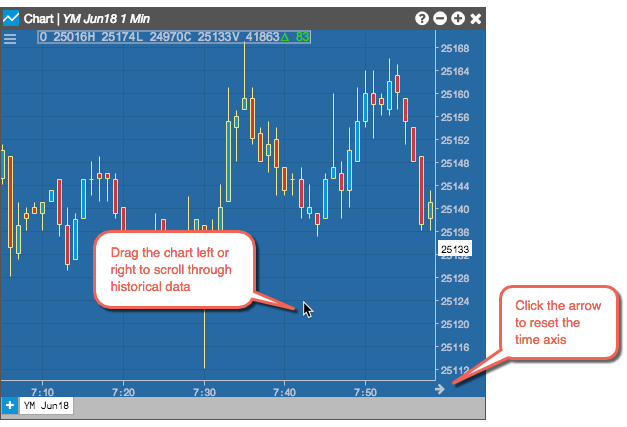
Click-and hold the price axis, then drag the mouse up or down to change the range of prices displayed in the chart.
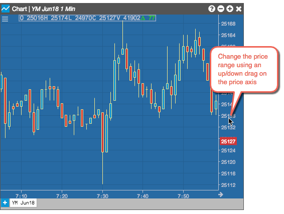
You can right-click in the title bar to create a widget group for your Charts.
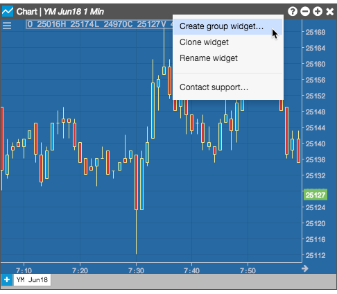
By default, charts use the difference of Bid prices of spread legs when building a chart for Autospreader spreads. If desired, you can use the difference in LTP (last traded price) of the legs instead.
To use LTP, you can right-click on the price (Y) axis and select LTP for the Spread Formula in the context menu.
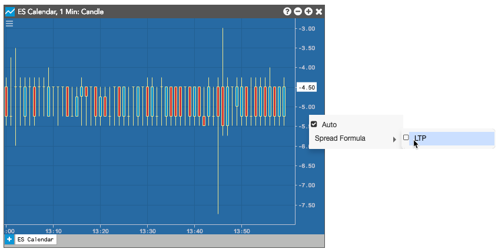